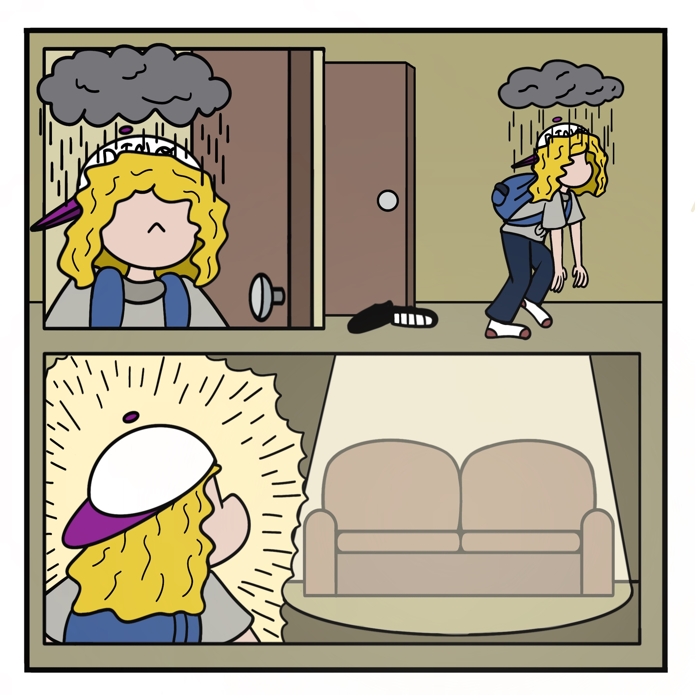
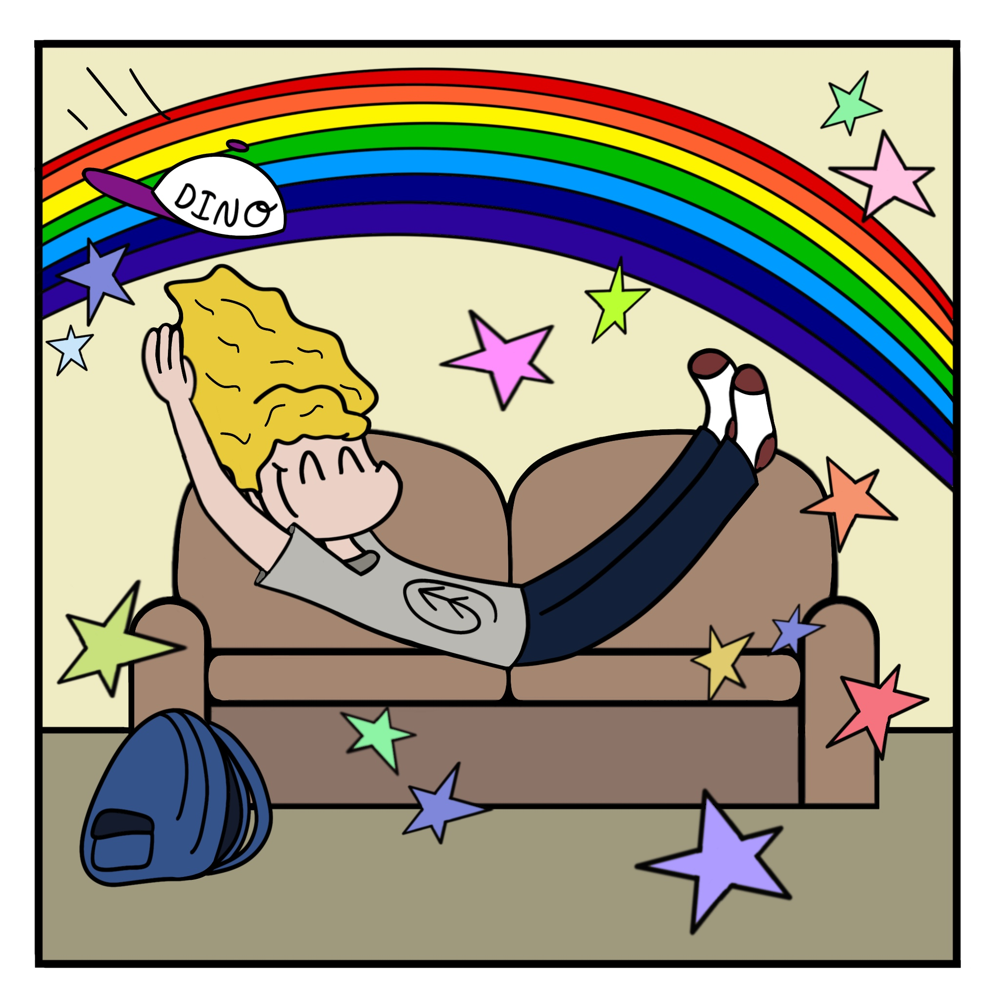
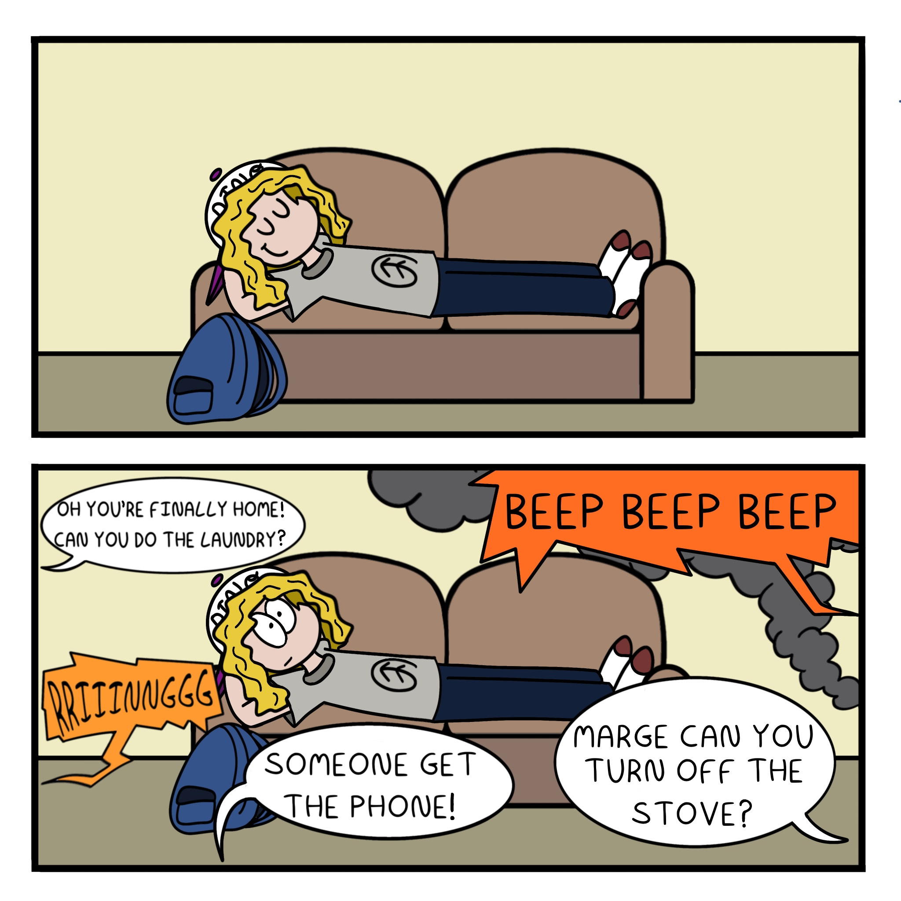
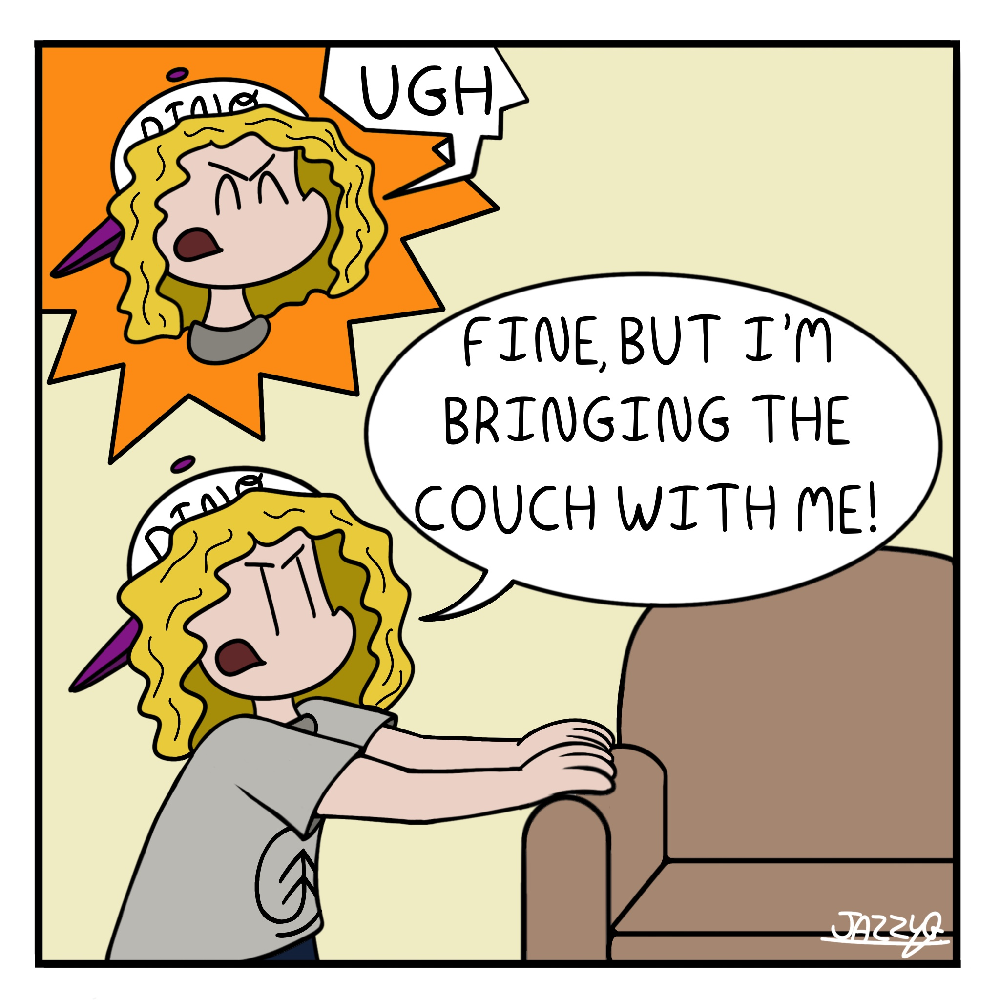

The Marge Mania is a slice of life type of comic strip. It is full of fun and simple gags revolving around the life of Marge and her hatred math. She is just a kid trying to get through life. Even though life literally seems impossible all the time.
Most recent comic:
   To acess Past Comics list (NEW PAGE NAVIGATION LINK HERE)
List of characters (NEW NAIVAGATION PAGE LINK HERE)
Jasmin Rose Guerrera is a Canadian artist and filmmaker from Montreal. She recently completed her undergraduate degree from Concordia University Mel Hoppenheim School of Cinema with an undergraduate in Film Animation. She believes in making films that will get an audience to react and to feel emotions strongly.
Visit my Social Media Page Here!Go fund my comic page!! Table